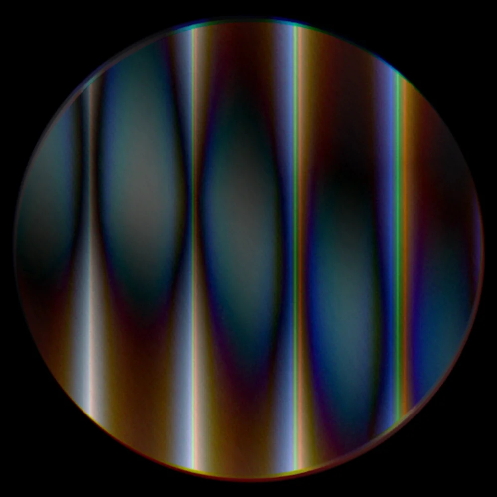

RubinSupport
Write to akos@tallpoppystudio.com. Say which iPhone and iOS version you use and what you were doing when something went wrong, and a person will reply, usually within a day or two.
Common questions
Which iPhones record open gate?
Open gate uses the full sensor readout of iPhone 17 Pro and later. Earlier iPhones record the full 4:3 frame instead. 48 MP ProRAW photos need an iPhone that supports ProRAW; other models save HEIF.
Why does ProRes RAW need a drive?
iOS only lets apps record ProRes RAW to an external USB-C drive. This applies to every camera app. Without a drive, open gate in ProRes 422 HQ or 10-bit HEVC records to the iPhone and still uses the full sensor.
Apple Log or Standard colour?
Standard colour looks right straight away. Apple Log records a flat image that keeps more highlight and shadow detail for grading. With Log, a preview LUT shows you the graded look while you shoot without changing the file, or you can bake a look into the recording.
How do I use my own LUTs?
Import a .cube file in Settings for video, or in the photo editor's Film tab for photos. Photo LUTs are applied to the finished image, so LUTs made for Apple Log footage will look too strong there.
Where are my photos and videos?
In the Files app under On My iPhone → Rubin, and in your photo library if "Save to Photos" is on.
How much space does open gate video take?
About 8–10 GB a minute in ProRes 422 HQ, and much less in HEVC. The top bar shows how many minutes are left.
Video records without sound
Another app or a call was using the microphone. End the call or close the other app, then reopen Rubin.
The phone gets warm
Full-sensor recording is demanding. Rubin warns you when the iPhone gets hot; if it gets too hot, iOS may pause the camera. Let it cool down for a few minutes.
I used SensorCam RAW
Same app, new name. Your settings and captures carried over with the update.